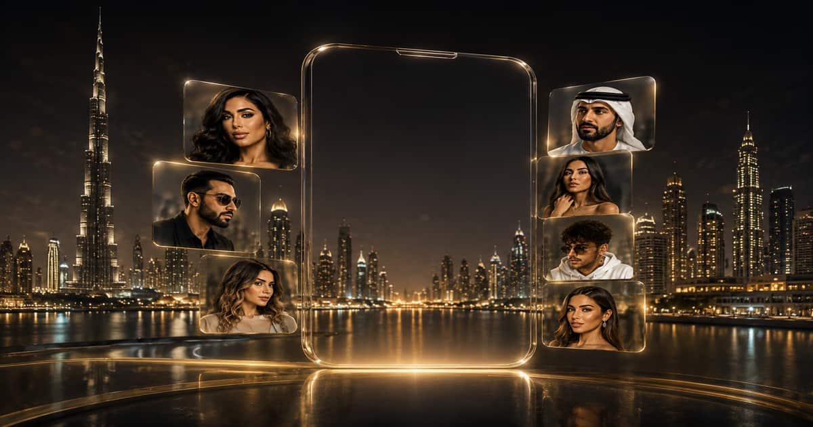

قبل سنوات قليلة، كان الوصول إلى الشهرة يتطلب الظهور على شاشات التلفزيون أو العمل في المجال الفني، أما اليوم فقد أصبحت منصات التواصل الاجتماعي تصنع أشهر الشخصيات في العالم العربي. ومع هذا التحول، برزت دبي والإمارات كأحد أهم المراكز العالمية لصناعة المحتوى الرقمي، لتصبح موطنًا لعشرات من أشهر مشاهير السوشال ميديا الذين يتابعهم ملايين الأشخاص داخل المنطقة وخارجها.
إذا كنت تبحث عن أشهر مشاهير السوشال ميديا في دبي أو تريد التعرف على أبرز المؤثرين في الإمارات، فستجد في هذا الدليل قائمة شاملة تضم أشهر صناع المحتوى على إنستغرام، تيك توك، يوتيوب وسناب شات، مع نبذة عن كل شخصية، مجالها، سبب شهرتها، وتأثيرها الحقيقي على الجمهور والعلامات التجارية.
لم تعد شهرة المؤثرين تقاس بعدد المتابعين فقط، بل أصبحت تعتمد على قوة التفاعل، وبناء الثقة، والقدرة على التأثير في قرارات الشراء. ولهذا أصبحت الشركات المحلية والعالمية تخصص ميزانيات كبيرة للتعاون مع مشاهير دبي في حملات التسويق عبر المؤثرين، خصوصًا في قطاعات الأزياء، التجميل، العقارات، السياحة، السيارات، والمطاعم.
وتُعد دبي اليوم البيئة الأكثر جذبًا لصناع المحتوى في الشرق الأوسط، بفضل البنية الرقمية المتطورة، وتنوع الفعاليات، وسهولة الوصول إلى جمهور محلي وعالمي، مما جعلها الوجهة الأولى للكثير من أشهر المؤثرين العرب وصناع المحتوى الذين اختاروا الإقامة والعمل في الإمارات.
في هذا الدليل لن نستعرض مجرد أسماء متداولة، بل ستجد قائمة محدثة تضم أشهر المؤثرين حسب الشهرة والتأثير، مع معلومات تساعد المسوقين والشركات ورواد الأعمال على التعرف إلى الشخصيات المناسبة للتعاون الإعلاني، وفهم أسباب نجاح كل مؤثر والمجالات التي يحقق فيها أفضل النتائج.
سواء كنت تبحث عن مشاهير الإمارات، أو تريد معرفة من هم أشهر مؤثري دبي، أو تخطط لإطلاق حملة مع وكالة تسويق المؤثرين في دبي، فإن هذا المقال صُمم ليكون المرجع الأكثر شمولًا وحداثة لكل ما يتعلق بعالم مشاهير السوشال ميديا في الإمارات.
أسماء أشهر مشاهير الإمارات: قائمة تضم 30 شخصية مؤثرة في السوشال ميديا
تضم القائمة التالية أهم مشاهير دبي وأبرز المؤثرين في الإمارات الذين يمتلكون حضورًا قويًا على إنستغرام وتيك توك ويوتيوب ومنصات التواصل الاجتماعي، مع توضيح تخصص كل مؤثر، والمنصة الأساسية، ونوعية الجمهور، ومدى ملاءمته للحملات الإعلانية.

| # | المؤثر | التخصص | المنصة الأساسية | الجمهور | التعاون الإعلاني |
|---|---|---|---|---|---|
| 1 | Huda Kattan | الجمال والتجميل | عالمي | ★★★★★ | |
| 2 | Karen Wazen | الموضة واللايف ستايل | الشرق الأوسط | ★★★★★ | |
| 3 | Anas Bukhash | الأعمال والبودكاست | Instagram / YouTube | عربي | ★★★★★ |
| 4 | Khalid Al Ameri | الحياة اليومية | Instagram / Facebook | عربي | ★★★★★ |
| 5 | Noor Stars | الترفيه والفلوقات | YouTube | عربي | ★★★★★ |
| 6 | Narins Beauty | الجمال واللايف ستايل | YouTube | عربي | ★★★★★ |
| 7 | Mo Vlogs | السيارات الفاخرة | YouTube | دولي | ★★★★★ |
| 8 | Lana Rose | الفن واللايف ستايل | عربي | ★★★★★ | |
| 9 | Rashed Belhasa (Money Kicks) | السيارات والرياضة | دولي | ★★★★★ | |
| 10 | Sara Al Madani | ريادة الأعمال | الخليج | ★★★★★ | |
| 11 | Taim AlFalasi | أسلوب الحياة | الإمارات | ★★★★★ | |
| 12 | Ahmed Al Nasheet | الإعلام والتقنية | YouTube | الخليج | ★★★★☆ |
| 13 | Joelle Mardinian | الجمال | عربي | ★★★★★ | |
| 14 | Ola Farahat | الموضة | الخليج | ★★★★★ | |
| 15 | Linda Andrade | الفخامة واللايف ستايل | TikTok | دولي | ★★★★★ |
| 16 | Hayla Ghazal | صناعة المحتوى | YouTube | عربي | ★★★★★ |
| 17 | Mahmoud Sidani | الموضة الرجالية | الخليج | ★★★★☆ | |
| 18 | Layla Akil | الموضة والعائلة | عربي | ★★★★☆ | |
| 19 | Wissam Qutob | الطهي | الخليج | ★★★★☆ | |
| 20 | Ghaith Marwan | الترفيه | عربي | ★★★★★ | |
| 21 | Rahaf Mohammed | اللايف ستايل | الخليج | ★★★★☆ | |
| 22 | Nael Abu Alteen | السفر | دولي | ★★★★☆ | |
| 23 | Reem Khabbazeh | الموضة | الخليج | ★★★★☆ | |
| 24 | Maya Ahmad | الجمال | عربي | ★★★★☆ | |
| 25 | Eva Zuk | الأزياء | دولي | ★★★★☆ | |
| 26 | Gehna Advani | الجمال | الإمارات | ★★★★☆ | |
| 27 | Manal Muffin | المطاعم والطعام | الإمارات | ★★★★☆ | |
| 28 | Ahmed Hossam | السفر واللايف ستايل | الخليج | ★★★★☆ | |
| 29 | Rawan Bin Hussain | الموضة والجمال | الخليج | ★★★★★ | |
| 30 | Mohamed Attal | التمثيل وصناعة المحتوى | عربي | ★★★★☆ |
من هم أشهر مشاهير السوشال ميديا في دبي والإمارات؟
تضم دبي والإمارات واحدة من أكبر مجتمعات صناع المحتوى في الشرق الأوسط، حيث اختارت شخصيات عربية وعالمية الإقامة والعمل فيها بفضل البيئة الرقمية المتطورة، والفرص التجارية، والحضور القوي للعلامات التجارية العالمية. لذلك أصبحت أسماء كثيرة ترتبط مباشرة بدبي عند الحديث عن مشاهير السوشال ميديا والتسويق عبر المؤثرين.
وتشمل هذه القائمة أشهر المؤثرين على إنستغرام، وتيك توك، ويوتيوب، وسناب شات، مع التركيز على الشخصيات التي تمتلك حضورًا قويًا وتأثيرًا حقيقيًا في الحملات الإعلانية، وليس فقط عددًا كبيرًا من المتابعين. وقد رُتبت الأسماء وفق مستوى الشهرة والتأثير وانتشارها في سوق المحتوى الرقمي في الإمارات.
أسماء أشهر مشاهير السوشال ميديا في دبي والإمارات
تضم دبي والإمارات نخبة من أشهر صناع المحتوى والمؤثرين العرب والعالميين الذين نجحوا في بناء جماهير بالملايين على إنستغرام، وتيك توك، ويوتيوب، وسناب شات. وفيما يلي أبرز الأسماء التي تسيطر على مشهد السوشال ميديا في دبي حتى عام 2026:
- Huda Kattan (هدى قطان) – الجمال وريادة الأعمال.
- Karen Wazen (كارن وازن) – الموضة واللايف ستايل.
- Anas Bukhash (أنس بوخش) – الإعلام والبودكاست.
- Khalid Al Ameri (خالد العامري) – المحتوى الاجتماعي والإنساني.
- Noor Stars (نور ستارز) – الترفيه وصناعة المحتوى.
- Mo Vlogs (محمد بيراغدار) – السيارات الفاخرة واللايف ستايل.
- Lana Rose (لانا روز) – الفن وأسلوب الحياة.
- Rashed Belhasa (Money Kicks) – السيارات والرياضة.
- Sara Al Madani (سارة المدني) – ريادة الأعمال.
- Joelle Mardinian (جويل مردينيان) – الجمال.
- Taim AlFalasi (تيم الفلاسي) – السفر واللايف ستايل.
- Ahmed Al Nasheet (أحمد الناشي) – التكنولوجيا والإعلام الرقمي.
في الفقرات التالية نستعرض كل شخصية بالتفصيل، مع سبب شهرتها، والمنصات التي تنشط عليها، وأبرز مجالات التعاون الإعلاني التي تناسبها.
1. Huda Kattan (هدى قطان)
تُعد هدى قطان واحدة من أشهر مشاهير السوشال ميديا في دبي والإمارات، ومن أكثر رائدات الأعمال تأثيرًا في قطاع التجميل عالميًا. استطاعت بناء قاعدة جماهيرية تضم عشرات الملايين من المتابعين عبر إنستغرام ومنصات التواصل المختلفة، لتصبح من أبرز الأسماء التي ترتبط بمدينة دبي وصناعة المحتوى الرقمي في الشرق الأوسط.
بدأت شهرة هدى قطان من خلال مشاركة نصائح المكياج والجمال، قبل أن تؤسس علامة Huda Beauty التي تحولت إلى واحدة من أشهر العلامات التجارية في صناعة مستحضرات التجميل، وتباع منتجاتها في عشرات الدول حول العالم. ويُنظر إليها اليوم على أنها نموذج يجمع بين التأثير الرقمي وريادة الأعمال.
تعتمد هدى قطان على محتوى يجمع بين مراجعات منتجات التجميل، وروتين العناية بالبشرة، وإطلاق المنتجات الجديدة، إضافة إلى مشاركة جوانب من حياتها اليومية. كما تتعاون مع علامات تجارية عالمية، وتُعد من أكثر الشخصيات تأثيرًا في حملات التسويق عبر المؤثرين في دبي والإمارات.
- المجال: الجمال وريادة الأعمال.
- المنصة الأساسية: Instagram.
- الجمهور: الشرق الأوسط والعالم.
- أبرز علامة تجارية: Huda Beauty.
- مناسبة لحملات: مستحضرات التجميل، العناية بالبشرة، الأزياء، المنتجات الفاخرة.
2. Karen Wazen (كارن وازن)
تُعد كارن وازن واحدة من أشهر مشاهير السوشال ميديا في دبي والإمارات، ومن أبرز مؤثرات الموضة واللايف ستايل في الشرق الأوسط. نجحت في بناء قاعدة جماهيرية كبيرة على إنستغرام بفضل محتواها الذي يجمع بين الأزياء الفاخرة، والحياة العائلية، وريادة الأعمال، مما جعلها من أكثر الشخصيات طلبًا في الحملات الإعلانية داخل الإمارات.
انطلقت شهرة كارن وازن من عالم الموضة، ثم أسست علامتها التجارية الخاصة بالنظارات Karen Wazen Eyewear التي وصلت إلى أسواق عالمية. كما تتعاون باستمرار مع أشهر دور الأزياء والعلامات التجارية الفاخرة، وهو ما عزز مكانتها كواحدة من أكثر المؤثرات تأثيرًا في دبي.
تعتمد كارن على محتوى متنوع يشمل الأزياء، والجمال، والسفر، والحياة اليومية، إضافة إلى مشاركتها في الفعاليات العالمية التي تستضيفها دبي. ويجعلها هذا التنوع خيارًا مفضلًا للعلامات التجارية التي تستهدف الجمهور الخليجي والعربي.
- المجال: الموضة واللايف ستايل.
- المنصة الأساسية: Instagram.
- الجمهور: الخليج والشرق الأوسط.
- أبرز مشروع: Karen Wazen Eyewear.
- مناسبة لحملات: الأزياء، المجوهرات، الجمال، السفر، المنتجات الفاخرة.
3. Anas Bukhash (أنس بوخش)
يُعتبر أنس بوخش من أشهر مشاهير السوشال ميديا في دبي والإمارات، ومن أكثر الشخصيات تأثيرًا في مجال الإعلام الرقمي وريادة الأعمال. استطاع أن يبني حضورًا قويًا على منصات التواصل الاجتماعي من خلال أسلوبه الهادئ ومحتواه الذي يركز على القصص الإنسانية والحوارات العميقة مع أبرز المشاهير وصناع القرار في العالم العربي.
حقق أنس شهرة واسعة عبر برنامج ABtalks الذي يستضيف فيه فنانين، ورياضيين، ورواد أعمال، وشخصيات عامة، حيث يعتمد على حوارات مختلفة تكشف الجوانب الإنسانية لضيوفه. وقد جعل هذا الأسلوب برنامجه واحدًا من أشهر برامج البودكاست والمقابلات في المنطقة.
إلى جانب نشاطه الإعلامي، يُعد أنس بوخش رائد أعمال ناجحًا، ويتعاون مع علامات تجارية عالمية في مجالات السيارات، والتكنولوجيا، والأزياء، والخدمات المالية، مما جعله من أكثر المؤثرين طلبًا في حملات التسويق عبر المؤثرين في دبي والإمارات.
- المجال: الإعلام وريادة الأعمال.
- المنصة الأساسية: Instagram وYouTube.
- أبرز مشروع: ABtalks.
- الجمهور: الشرق الأوسط وشمال أفريقيا.
- مناسب لحملات: السيارات، التكنولوجيا، البنوك، الشركات، العلامات التجارية الفاخرة.
4. Khalid Al Ameri (خالد العامري)
يُعد خالد العامري من أشهر مشاهير السوشال ميديا في الإمارات، ويُعتبر من أبرز صناع المحتوى الإماراتيين الذين استطاعوا الوصول إلى جمهور عربي وعالمي من خلال محتوى إنساني يعكس الحياة اليومية والثقافة الإماراتية. ويُصنف باستمرار ضمن أكثر المؤثرين تأثيرًا في دبي بفضل أسلوبه البسيط ورسائله الإيجابية.
اشتهر خالد العامري بفيديوهاته التي تناقش قضايا الأسرة، والتربية، والعلاقات الإنسانية، والهوية الإماراتية، إضافة إلى تقديم محتوى يجمع بين الكوميديا الهادفة والرسائل الاجتماعية. وقد ساهم هذا الأسلوب في بناء قاعدة جماهيرية كبيرة على منصات التواصل الاجتماعي، خاصة إنستغرام وفيسبوك ويوتيوب.
تتعاون مع خالد العامري العديد من الجهات الحكومية والعلامات التجارية العالمية، لما يتمتع به من مصداقية عالية ونسبة تفاعل قوية مع جمهوره، مما يجعله من أبرز الأسماء في حملات التسويق عبر المؤثرين في دبي والإمارات.
- المجال: المحتوى الاجتماعي والإنساني.
- المنصة الأساسية: Instagram وFacebook وYouTube.
- الجمهور: الإمارات والخليج والعالم العربي.
- أبرز ما يميزه: المحتوى العائلي والثقافي والإنساني.
- مناسب لحملات: الجهات الحكومية، السياحة، التعليم، المسؤولية المجتمعية، العلامات التجارية الكبرى.
5. Noor Stars (نور ستارز)
تُعتبر نور ستارز واحدة من أشهر مشاهير السوشال ميديا في دبي والإمارات، ومن أكبر صانعات المحتوى العربيات على يوتيوب ومنصات التواصل الاجتماعي. استطاعت خلال سنوات قليلة بناء قاعدة جماهيرية تضم ملايين المتابعين، لتصبح من أكثر المؤثرات حضورًا في الحملات الإعلانية التي تستهدف الجمهور العربي.
بدأت نور ستارز مسيرتها عبر يوتيوب من خلال تقديم محتوى ترفيهي يعتمد على الفلوقات، والتحديات، واليوميات، ثم وسعت نشاطها إلى إنستغرام وتيك توك، حيث تشارك متابعيها تفاصيل حياتها وتجاربها مع الموضة والجمال والسفر، وهو ما ساهم في زيادة شعبيتها داخل الإمارات وخارجها.
تتعاون نور ستارز مع العديد من العلامات التجارية العالمية والإقليمية، وتُعد من أبرز الأسماء في قطاع التسويق عبر المؤثرين، خاصة في مجالات مستحضرات التجميل، والأزياء، والإلكترونيات، ومنتجات أسلوب الحياة.
- المجال: صناعة المحتوى والترفيه.
- المنصة الأساسية: YouTube وInstagram.
- الجمهور: العالم العربي.
- أبرز المحتوى: الفلوقات والتحديات واليوميات.
- مناسبة لحملات: الجمال، الأزياء، التكنولوجيا، المنتجات الاستهلاكية.
6. Mo Vlogs (محمد بيراغدار)
يُعد Mo Vlogs من أشهر مشاهير السوشال ميديا في دبي والإمارات، ومن أبرز اليوتيوبرز العرب الذين حققوا شهرة عالمية بفضل محتواه الذي يركز على السيارات الفاخرة، وأسلوب الحياة في دبي، والجولات داخل أشهر المعالم والفنادق والمشاريع العقارية.
بدأ Mo Vlogs رحلته على يوتيوب بتوثيق حياته اليومية في دبي، قبل أن يتحول إلى واحد من أكثر صناع المحتوى مشاهدة في المنطقة. ويتميز محتواه بعرض السيارات الرياضية الخارقة، واليخوت، والمنازل الفاخرة، بالإضافة إلى لقاءات مع مشاهير ورجال أعمال من مختلف أنحاء العالم.
نجاحه المستمر جعله شريكًا لعدد كبير من العلامات التجارية العالمية، كما ساهم في الترويج لدبي كواحدة من أبرز الوجهات العالمية لصناعة المحتوى الرقمي، لذلك يُعتبر من أكثر المؤثرين تأثيرًا في مجالات السيارات الفاخرة، والعقارات، والسياحة، والمنتجات الفاخرة.
- المجال: السيارات الفاخرة واللايف ستايل.
- المنصة الأساسية: YouTube.
- الجمهور: الشرق الأوسط وجمهور عالمي.
- أبرز المحتوى: السيارات، العقارات، السفر، أسلوب الحياة في دبي.
- مناسب لحملات: السيارات، العقارات، الفنادق، السياحة، المنتجات الفاخرة.
7. Lana Rose (لانا روز)
تُعد لانا روز من أشهر مشاهير السوشال ميديا في دبي والإمارات، وحققت شهرة واسعة بفضل محتواها الذي يجمع بين الفنون، وأسلوب الحياة الفاخر، والسيارات الرياضية، واليوميات. وتُعتبر من أبرز صانعات المحتوى المقيمات في دبي، حيث يتابعها ملايين الأشخاص عبر منصات التواصل الاجتماعي.
بدأت لانا روز رحلتها على يوتيوب قبل أن توسع حضورها على إنستغرام، لتشارك جمهورها تفاصيل حياتها، وأعمالها الفنية، ورحلاتها، بالإضافة إلى شغفها بالرسم والسيارات الفاخرة. وقد ساهم هذا التنوع في بناء قاعدة جماهيرية كبيرة داخل الإمارات وخارجها.
تتعاون لانا روز مع العديد من العلامات التجارية في مجالات الأزياء، ومستحضرات التجميل، والمجوهرات، والسيارات الفاخرة، كما تُعد من أبرز الشخصيات التي تعكس أسلوب الحياة العصري في دبي، وهو ما يجعلها خيارًا مناسبًا للعديد من الحملات التسويقية.
- المجال: اللايف ستايل والفنون.
- المنصة الأساسية: YouTube وInstagram.
- الجمهور: الخليج والشرق الأوسط.
- أبرز المحتوى: أسلوب الحياة، الرسم، السيارات الفاخرة، السفر.
- مناسبة لحملات: الأزياء، المجوهرات، السيارات، مستحضرات التجميل، المنتجات الفاخرة.
يُعتبر راشد بالحصا، المعروف عالميًا باسم Money Kicks، من أشهر مشاهير السوشال ميديا في دبي والإمارات، ومن أبرز صناع المحتوى في مجال السيارات الفاخرة وأسلوب الحياة. استطاع بناء قاعدة جماهيرية تضم ملايين المتابعين بفضل محتواه الذي يعرض الحياة الفاخرة في دبي، ومجموعته المميزة من السيارات الرياضية، ولقاءاته مع مشاهير العالم.
بدأت شهرة راشد بالحصا عبر إنستغرام ويوتيوب من خلال استعراض السيارات النادرة واليخوت والفعاليات الرياضية، قبل أن يتحول إلى واحد من أكثر المؤثرين حضورًا في وسائل الإعلام العالمية. كما يُعرف بشغفه بالملاكمة ومشاركته في عدد من النزالات الاستعراضية التي جذبت اهتمامًا واسعًا على منصات التواصل الاجتماعي.
يتعاون Money Kicks مع علامات تجارية عالمية في مجالات السيارات، والساعات الفاخرة، والأزياء، والمنتجات الفاخرة، ويُعد من أكثر الشخصيات تأثيرًا في الحملات التي تستهدف الشباب ومحبي أسلوب الحياة الفاخر في دبي.
- المجال: السيارات الفاخرة وأسلوب الحياة.
- المنصة الأساسية: Instagram وYouTube.
- الجمهور: عالمي والشرق الأوسط.
- أبرز المحتوى: السيارات الرياضية، الملاكمة، السفر، الحياة الفاخرة.
- مناسب لحملات: السيارات، الساعات، الأزياء الفاخرة، المنتجات الفاخرة، الفعاليات الرياضية.
9. Sara Al Madani (سارة المدني)
تُعد سارة المدني من أبرز رائدات الأعمال ومشاهير السوشال ميديا في دبي والإمارات، حيث استطاعت الجمع بين ريادة الأعمال، وصناعة المحتوى، وبناء العلامة الشخصية. وتُعرف بحضورها القوي على منصات التواصل الاجتماعي، ومشاركتها المستمرة لنصائح تتعلق بالأعمال، والاستثمار، والتطوير الشخصي، مما جعلها واحدة من أكثر الشخصيات تأثيرًا في مجتمع الأعمال الإماراتي.
بدأت سارة المدني مسيرتها في عالم ريادة الأعمال في سن مبكرة، وأسست عدة مشاريع في مجالات مختلفة، قبل أن تتحول إلى شخصية مؤثرة يتابعها ملايين الأشخاص. كما ازدادت شهرتها عالميًا بعد مشاركتها في البرنامج التلفزيوني The Real Housewives of Dubai، الذي ساهم في توسيع قاعدة جمهورها داخل الإمارات وخارجها.
تعتمد سارة على محتوى يجمع بين ريادة الأعمال، والتحفيز، ونمط الحياة، والموضة، وتشارك متابعيها تجاربها الشخصية والمهنية، وهو ما جعلها شريكًا للعديد من العلامات التجارية العالمية التي تستهدف رواد الأعمال والنساء في منطقة الخليج.
- المجال: ريادة الأعمال وبناء العلامة الشخصية.
- المنصة الأساسية: Instagram.
- الجمهور: الإمارات والخليج والشرق الأوسط.
- أبرز المحتوى: ريادة الأعمال، التطوير الشخصي، أسلوب الحياة.
- مناسبة لحملات: الشركات، الخدمات المالية، التكنولوجيا، التعليم، الأزياء، المنتجات الفاخرة.
10. Joelle Mardinian (جويل مردينيان)
تُعتبر جويل مردينيان واحدة من أشهر مشاهير السوشال ميديا في دبي والإمارات، ومن أبرز خبيرات التجميل في العالم العربي. استطاعت على مدار سنوات بناء علامة شخصية قوية تجمع بين الإعلام، وريادة الأعمال، وصناعة المحتوى، لتصبح من أكثر المؤثرات تأثيرًا في قطاع الجمال والموضة داخل الإمارات.
حققت جويل شهرة واسعة من خلال برامجها التلفزيونية المتخصصة في الجمال، قبل أن توسع حضورها على إنستغرام ومنصات التواصل الاجتماعي، حيث تشارك متابعيها نصائح العناية بالبشرة، ومستحضرات التجميل، والموضة، وأسلوب الحياة، إلى جانب إطلاق منتجاتها الخاصة وإدارة مشاريعها في مجال التجميل.
بفضل خبرتها الطويلة وثقة الجمهور بها، أصبحت جويل مردينيان من أكثر الشخصيات تعاونًا مع العلامات التجارية العالمية، كما تُعد من أبرز الأسماء في حملات التسويق عبر المؤثرين التي تستهدف النساء في الإمارات والخليج.
- المجال: الجمال، التجميل، وريادة الأعمال.
- المنصة الأساسية: Instagram.
- الجمهور: الإمارات، الخليج، والعالم العربي.
- أبرز المحتوى: العناية بالبشرة، المكياج، الموضة، وأسلوب الحياة.
- مناسبة لحملات: مستحضرات التجميل، العناية بالبشرة، الأزياء، المجوهرات، المنتجات الفاخرة.
11. Taim AlFalasi (تيم الفلاسي)
تُعد تيم الفلاسي من أشهر مشاهير السوشال ميديا في دبي والإمارات، ومن أبرز صانعات المحتوى الإماراتيات اللاتي استطعن بناء حضور قوي على منصات التواصل الاجتماعي. وتميزت بمحتوى يجمع بين أسلوب الحياة، والرياضة، والسفر، والمغامرات، مما أكسبها قاعدة جماهيرية واسعة داخل الإمارات والخليج.
بدأت تيم الفلاسي رحلتها من خلال مشاركة يومياتها وتجاربها الشخصية، قبل أن تتحول إلى واحدة من أكثر المؤثرات تعاونًا مع العلامات التجارية المحلية والعالمية. كما تشارك باستمرار في الفعاليات الرياضية والمجتمعية التي تستضيفها دبي، وهو ما عزز مكانتها كإحدى أبرز الشخصيات المؤثرة في الدولة.
يعتمد محتواها على تقديم تجارب حقيقية وأسلوب حياة قريب من الجمهور، إلى جانب اهتمامها بالسفر، والمطاعم، والأنشطة الخارجية، وهو ما يجعلها خيارًا مناسبًا للعلامات التجارية التي تستهدف الجمهور الإماراتي والخليجي.
- المجال: أسلوب الحياة والسفر.
- المنصة الأساسية: Instagram.
- الجمهور: الإمارات والخليج.
- أبرز المحتوى: السفر، الرياضة، الفعاليات، الحياة اليومية.
- مناسبة لحملات: السياحة، السيارات، المطاعم، الرياضة، العلامات التجارية المحلية.
12. Ahmed Al Nasheet (أحمد الناشي)
يُعتبر أحمد الناشي من أشهر صناع المحتوى في دبي والإمارات، ومن أبرز الشخصيات المؤثرة في مجالات التكنولوجيا، وريادة الأعمال، والإعلام الرقمي. استطاع أن يبني حضورًا قويًا على منصات التواصل الاجتماعي من خلال تقديم محتوى يجمع بين تحليل أحدث التقنيات، والابتكار، والاقتصاد الرقمي، بأسلوب بسيط يناسب مختلف فئات الجمهور.
يقدم أحمد الناشي محتوى متنوعًا يشمل مراجعات الأجهزة الذكية، والذكاء الاصطناعي، والشركات الناشئة، والتحول الرقمي، إضافة إلى تغطيته للفعاليات التقنية الكبرى التي تستضيفها دبي. وقد ساهم هذا المحتوى في ترسيخ مكانته كأحد أبرز المؤثرين في قطاع التكنولوجيا على مستوى الخليج.
وتتعاون معه شركات عالمية وإقليمية في مجالات التقنية، والاتصالات، والخدمات الرقمية، كما يشارك في مؤتمرات وفعاليات متخصصة تتعلق بالابتكار وريادة الأعمال، مما يجعله من الأسماء المؤثرة في الحملات التسويقية الموجهة لقطاع التكنولوجيا.
- المجال: التكنولوجيا والإعلام الرقمي.
- المنصة الأساسية: YouTube وInstagram.
- الجمهور: الخليج والشرق الأوسط.
- أبرز المحتوى: التقنية، الذكاء الاصطناعي، ريادة الأعمال، الأجهزة الذكية.
- مناسب لحملات: التكنولوجيا، الاتصالات، التطبيقات، الخدمات الرقمية، الشركات الناشئة.
مقارنة بين أشهر مشاهير السوشال ميديا في دبي حسب مجال التعاون
إذا كنت تخطط لإطلاق حملة تسويق عبر المؤثرين في دبي، فإن اختيار المؤثر المناسب يعتمد على طبيعة المنتج والجمهور المستهدف، وليس فقط على عدد المتابعين. يوضح الجدول التالي أفضل المجالات التي يتميز بها أشهر المؤثرين في الإمارات.
| المؤثر | المجال | المنصة | الأفضل للحملات |
|---|---|---|---|
| Huda Kattan | الجمال | مستحضرات التجميل والعناية بالبشرة | |
| Karen Wazen | الموضة | الأزياء والمجوهرات والمنتجات الفاخرة | |
| Anas Bukhash | الأعمال والإعلام | Instagram / YouTube | الشركات والبنوك والتكنولوجيا |
| Khalid Al Ameri | المحتوى الاجتماعي | السياحة والجهات الحكومية والعائلة | |
| Noor Stars | الترفيه | YouTube | المنتجات الشبابية والإلكترونيات |
| Mo Vlogs | السيارات | YouTube | السيارات والعقارات والفنادق |
| Lana Rose | اللايف ستايل | الأزياء والجمال والمنتجات الفاخرة | |
| Rashed Belhasa | الرياضة والسيارات | السيارات والساعات والرياضة | |
| Sara Al Madani | ريادة الأعمال | الخدمات المالية وريادة الأعمال | |
| Joelle Mardinian | الجمال | العناية بالبشرة ومستحضرات التجميل |
القائمة الكاملة لأبرز 50 مشهورًا ومؤثرًا على السوشال ميديا في دبي والإمارات

| # | الاسم | المجال | المنصة الأساسية |
|---|---|---|---|
| 1 | Huda Kattan | الجمال | |
| 2 | Karen Wazen | الموضة | |
| 3 | Anas Bukhash | الإعلام والبودكاست | Instagram / YouTube |
| 4 | Khalid Al Ameri | المحتوى الاجتماعي | |
| 5 | Noor Stars | الترفيه | YouTube |
| 6 | Mo Vlogs | السيارات | YouTube |
| 7 | Lana Rose | اللايف ستايل | |
| 8 | Rashed Belhasa (Money Kicks) | السيارات | |
| 9 | Sara Al Madani | ريادة الأعمال | |
| 10 | Joelle Mardinian | الجمال | |
| 11 | Taim AlFalasi | السفر | |
| 12 | Ahmed Al Nasheet | التكنولوجيا | YouTube |
| 13 | Narins Beauty | الجمال | YouTube |
| 14 | Hayla Ghazal | صناعة المحتوى | YouTube |
| 15 | Linda Andrade | اللايف ستايل | TikTok |
| 16 | Ola Farahat | الموضة | |
| 17 | Mahmoud Sidani | الموضة الرجالية | |
| 18 | Layla Akil | الموضة | |
| 19 | Wissam Qutob | الطهي | |
| 20 | Rawan Bin Hussain | الموضة والجمال | |
| 21 | Nour Arida | الموضة | |
| 22 | Diala Makki | الإعلام والموضة | |
| 23 | Farhana Bodi | اللايف ستايل | |
| 24 | Mona Kattan | العطور والجمال | |
| 25 | Supercar Blondie | السيارات والتقنية | YouTube |
| 26 | Fazza | الحياة والرياضة | |
| 27 | Lojain Omran | الإعلام | |
| 28 | Mahira Abdel Aziz | الإعلام | |
| 29 | DJ Bliss | الموسيقى | |
| 30 | Danya Mohammed (Diva Dee) | اللايف ستايل | |
| 31 | Ebraheem Al Samadi | ريادة الأعمال | |
| 32 | Zeina Khoury | العقارات | |
| 33 | Safa Siddiqui | الموضة | |
| 34 | Loujain Adada | اللايف ستايل | |
| 35 | Reem Khabbazeh | الموضة | |
| 36 | Manal Muffin | الطعام | |
| 37 | Gehna Advani | الجمال | |
| 38 | Eva Zuk | الأزياء | |
| 39 | Maya Ahmad | الجمال | |
| 40 | Ahmed Hossam | السفر | |
| 41 | Mohamed Attal | التمثيل وصناعة المحتوى | |
| 42 | Nael Abu Alteen | السفر | |
| 43 | Amy Roko | الترفيه | |
| 44 | Logina Salah | الموضة والجمال | |
| 45 | Dina Tokio | الموضة | |
| 46 | Alaa Balkhy | الفن والموضة | |
| 47 | Nour Mar | اللايف ستايل | |
| 48 | Rand Dalati | الموضة | |
| 49 | Shahad Hassan | الجمال والموضة | |
| 50 | Leen AbouShaar | اللايف ستايل |
الأسئلة الشائعة حول مشاهير السوشال ميديا في دبي والإمارات
من هم أشهر مشاهير السوشال ميديا في دبي؟
تضم دبي عددًا كبيرًا من أشهر المؤثرين في العالم العربي، ومن أبرزهم Huda Kattan، Karen Wazen، Anas Bukhash، Khalid Al Ameri، Noor Stars، Mo Vlogs، Lana Rose، وRashed Belhasa، بالإضافة إلى عشرات صناع المحتوى في مجالات الجمال، والموضة، والسفر، وريادة الأعمال.
من أشهر مشاهير السوشال ميديا في الإمارات؟
يضم سوق المحتوى في الإمارات مؤثرين إماراتيين وعربًا وعالميين يقيمون في دبي وأبوظبي، ويقدمون محتوى في مجالات متعددة مثل الجمال، والأزياء، والتقنية، والطعام، والسفر، والرياضة، وريادة الأعمال.
كيف يمكن التواصل مع مشاهير دبي للإعلانات؟
يمكن التواصل مع معظم مشاهير دبي عبر البريد الإلكتروني الموجود في حساباتهم الرسمية، أو من خلال مديري أعمالهم، أو عبر وكالات التسويق المتخصصة التي تدير حملات المؤثرين وتنسق التعاون مع العلامات التجارية.
ما أفضل وكالة تسويق مؤثرين في دبي؟
يعتمد اختيار الوكالة على نوع الحملة والجمهور المستهدف، لكن الوكالات المتخصصة في إدارة المؤثرين تساعد الشركات على اختيار الشخصية المناسبة، والتفاوض على الأسعار، وقياس نتائج الحملات الإعلانية.
كيف تختار الشركة المؤثر المناسب في دبي؟
لا يعتمد الاختيار على عدد المتابعين فقط، بل يجب دراسة معدل التفاعل، ونوعية الجمهور، والمحتوى، وسجل الحملات السابقة، ومدى توافق شخصية المؤثر مع أهداف العلامة التجارية.
كم تبلغ أسعار التعاون مع مشاهير السوشال ميديا في دبي؟
تختلف الأسعار حسب شهرة المؤثر، وعدد المتابعين، ونسبة التفاعل، ونوع المحتوى المطلوب، وقد تتراوح من مئات الدولارات إلى عشرات الآلاف للحملة الواحدة لدى أشهر المؤثرين.
هل عدد المتابعين هو العامل الأهم عند اختيار المؤثر؟
لا، فالكثير من الشركات أصبحت تركز على معدل التفاعل الحقيقي وجودة الجمهور، لأن المؤثر صاحب التفاعل المرتفع قد يحقق نتائج أفضل من حساب يملك ملايين المتابعين دون تفاعل فعلي.
ما أشهر مجالات المؤثرين في دبي؟
تشمل أبرز المجالات الجمال، والموضة، والسيارات، والسفر، والطعام، والعقارات، والرياضة، والتكنولوجيا، وريادة الأعمال، والمحتوى العائلي، وهي القطاعات الأكثر نشاطًا في حملات التسويق عبر المؤثرين.
ما المنصات الأكثر استخدامًا لدى مشاهير دبي؟
يعد إنستغرام المنصة الأكثر انتشارًا بين مشاهير دبي، يليه تيك توك، ويوتيوب، وسناب شات، بينما يعتمد بعض المؤثرين أيضًا على لينكدإن أو منصة X حسب طبيعة محتواهم.
هل يعيش جميع مشاهير هذه القائمة في دبي؟
لا، تضم القائمة شخصيات إماراتية وأخرى عربية وعالمية تقيم في دبي أو تمارس جزءًا كبيرًا من نشاطها المهني داخل الإمارات، وهو ما يجعلها من أبرز الأسماء في سوق التسويق عبر المؤثرين المحلي.
لماذا تعتبر دبي مركزًا لصناعة المحتوى الرقمي؟
تتميز دبي ببنية تحتية رقمية متطورة، واستضافة فعاليات عالمية، ووجود آلاف العلامات التجارية، مما يجعلها بيئة مثالية لصناع المحتوى والمؤثرين من مختلف أنحاء العالم.
كيف تساعد وكالات إدارة المؤثرين الشركات في دبي؟
توفر وكالات إدارة المؤثرين خدمات البحث عن المؤثرين المناسبين، وإدارة العقود، وتنفيذ الحملات، وتحليل النتائج، لضمان تحقيق أفضل عائد على الاستثمار من التسويق عبر المؤثرين.
هل تضم هذه القائمة أشهر مؤثري إنستغرام وتيك توك ويوتيوب في دبي؟
نعم، تشمل القائمة أشهر الشخصيات المؤثرة على إنستغرام، وتيك توك، ويوتيوب، إضافة إلى صناع محتوى بارزين على منصات أخرى، مع التركيز على التأثير الحقيقي والحضور في سوق الإمارات.
كيف يتم تحديث قائمة مشاهير السوشال ميديا في دبي؟
يتم تحديث القائمة بشكل دوري بالاعتماد على شهرة المؤثرين، ونشاطهم الحالي، وتأثيرهم في الحملات الإعلانية، إضافة إلى متابعة التغيرات في منصات التواصل الاجتماعي وسوق التسويق عبر المؤثرين.
المصادر والمراجع
تم إعداد هذا الدليل بالاعتماد على مصادر متخصصة في التسويق عبر المؤثرين، ومواقع توثق أبرز مشاهير السوشال ميديا في دبي والإمارات، بالإضافة إلى المواقع الرسمية للمؤثرين والعلامات التجارية المرتبطة بهم.
- Bayut – Top Social Media Influencers in Dubai
- ValueYourNetwork – Top Dubai Influencers
- Edarabia – UAE Bloggers & Influencers
- Right Media – Top Dubai Influencers
- Viva Media Creative – التسويق عبر المؤثرين وإدارة المشاهير وصناعة المحتوى
- الحسابات الرسمية للمؤثرين على Instagram وYouTube وTikTok، إضافة إلى المواقع الرسمية للعلامات التجارية الخاصة بهم.